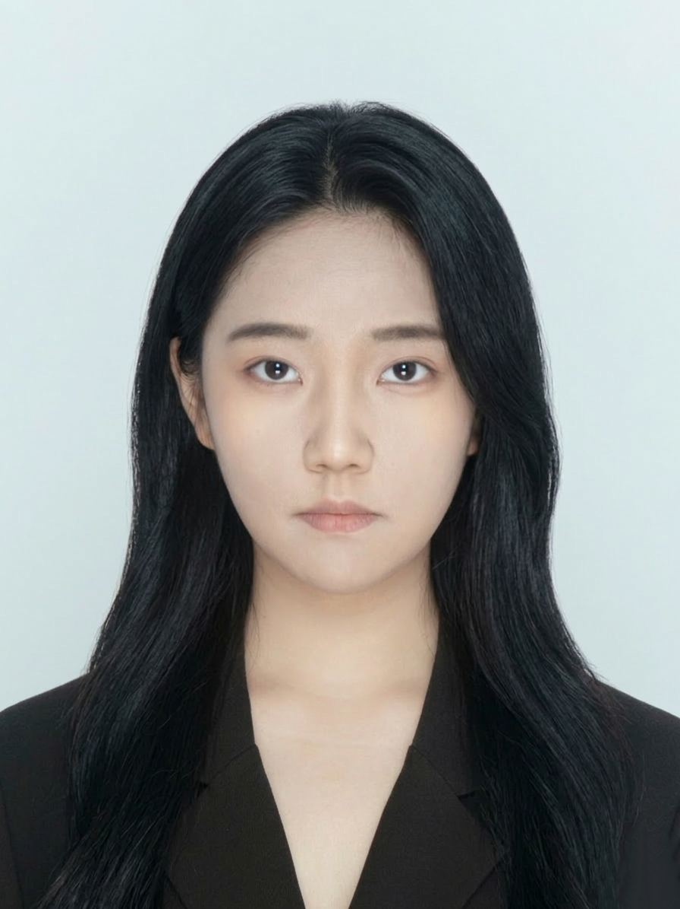
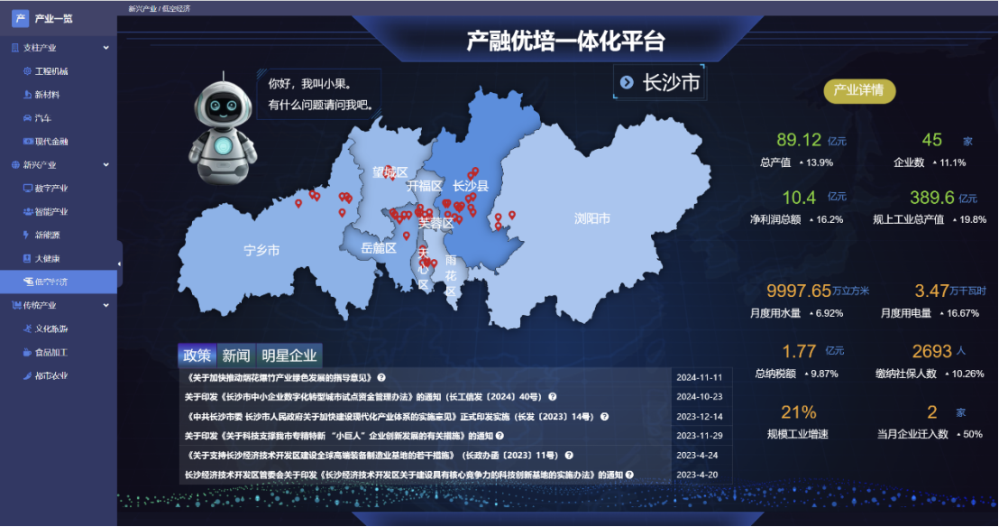
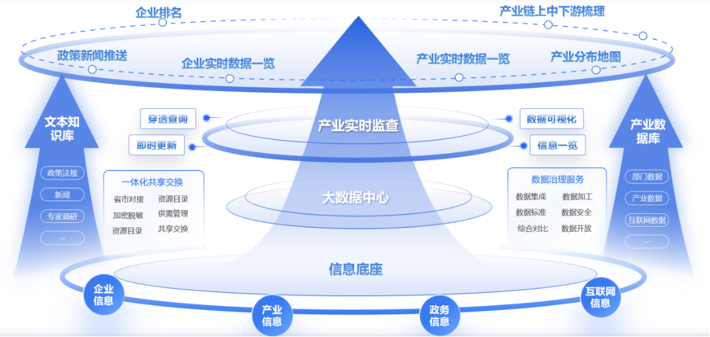
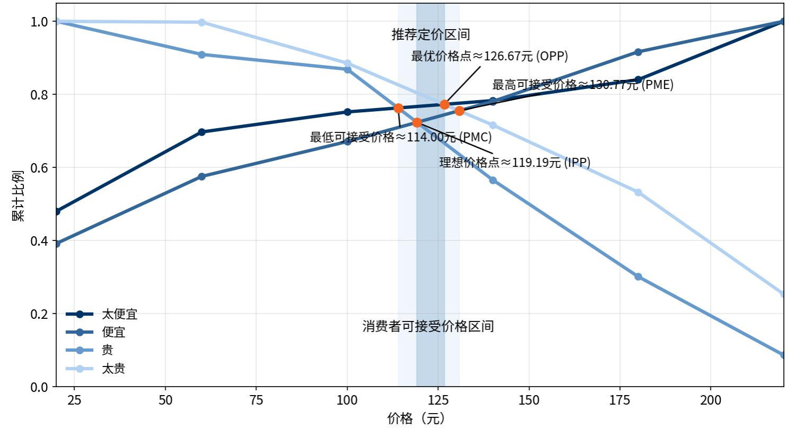
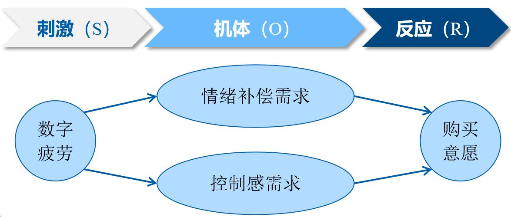
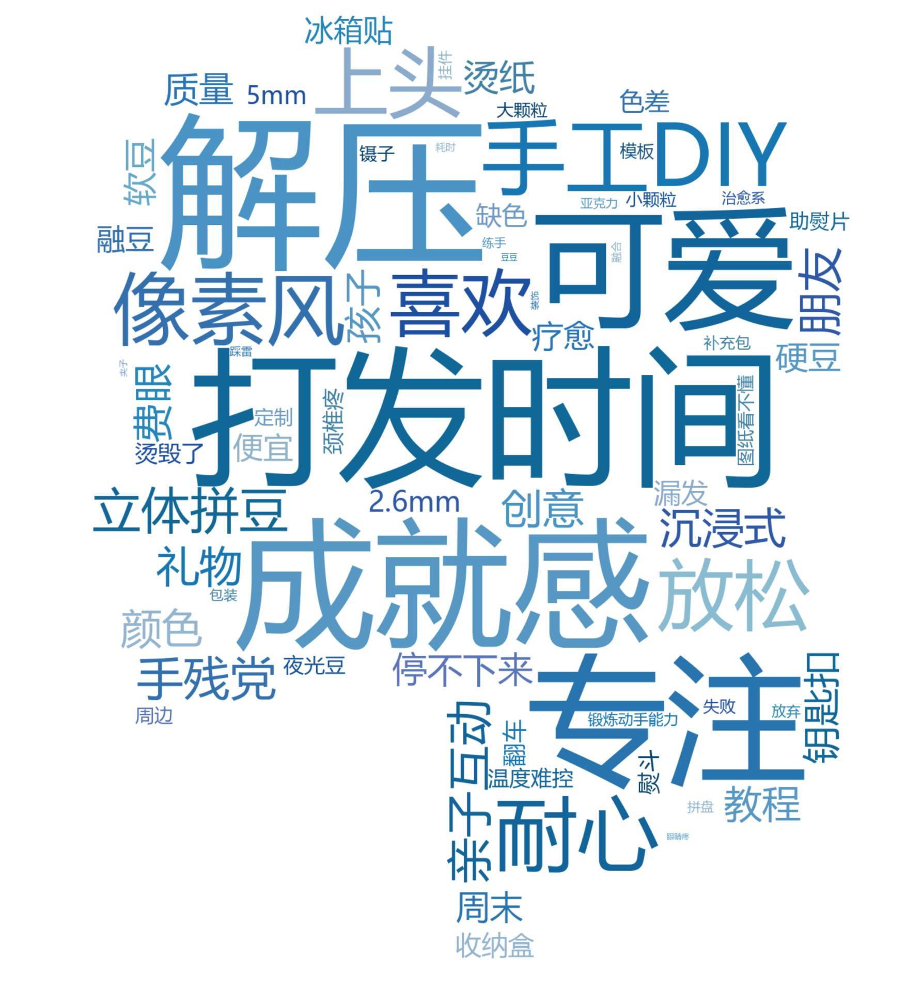
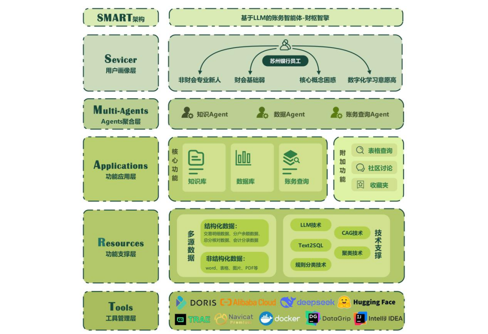
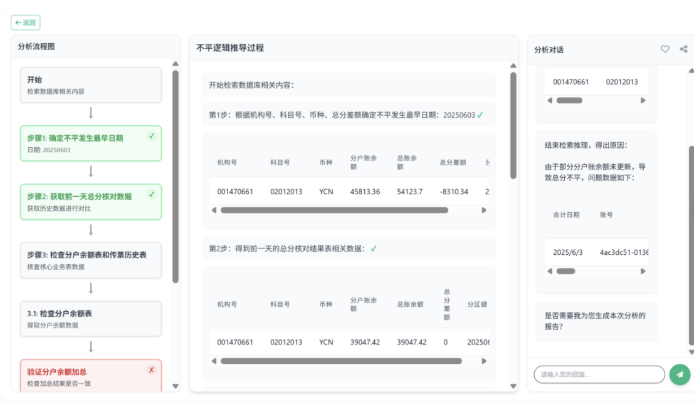
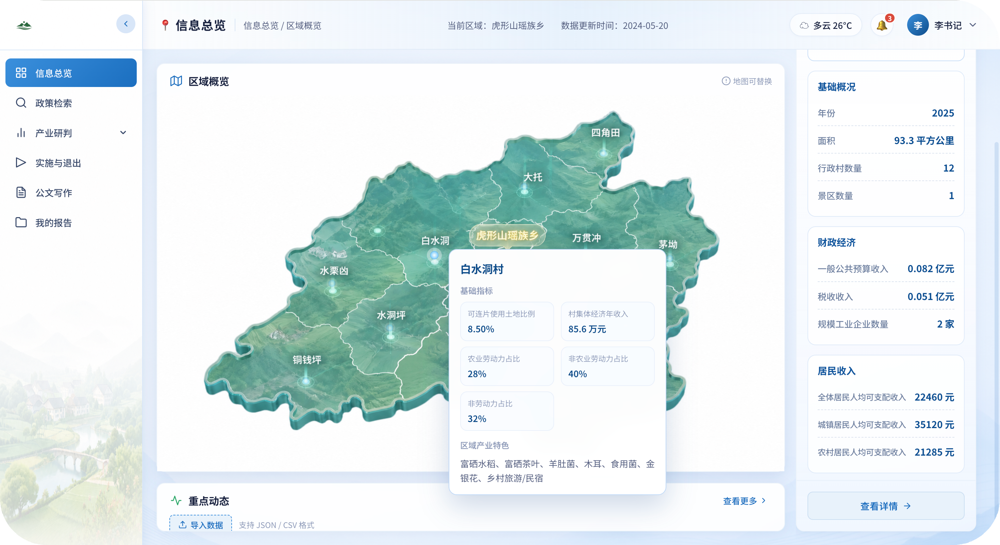
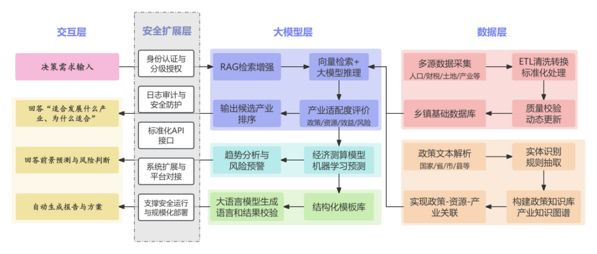

产业金融协同中存在数据孤岛、信息滞后、分析能力不足；政府与金融机构难以实时掌握产业链运行状态并快速形成研判。
💡 我的工作（产品策划）B端平台要同时服务“看的人、查的人、研的人”，一套数据、多角色视图是关键；AI助手把分析门槛降到一句话。


2025年拼豆电商销售2.91亿元、搜索量同比+500%，小红书话题82亿浏览；数字疲劳催生线下手作“触觉逃离”，但用户是谁、为何购买、溢价几何、市场多大尚不清楚。
💡 我的工作（产品策划）拼豆消费本质是“数字疲劳下通过专注手作夺回控制感”；“用户分层→场景溢价→精准定价”迁移到互联网付费设计。



非财会新员工难掌握科目与借贷方向（入门难）；账务数据分散多系统（检索慢）；总分不平需逐笔追溯人工定位根源（排障久）。
💡 我的工作（产品策划）金融AI的信任公式=可解释+可溯源+关键规则校验；“规则+大模型”混合架构比纯大模型更适合高合规场景。


乡镇人口、财税、企业、资源数据分散多部门（找数据难）；国家至县多级政策海量（匹配难）；产业规划与招商长期依赖个人经验（缺数据工具）。
💡 我的工作（产品策划）政务产品的核心是嵌入真实工作流；基层用户数字化能力参差，高频刚需场景（申报、汇报）是激活关键；AI输出必须可溯源、可解释。

